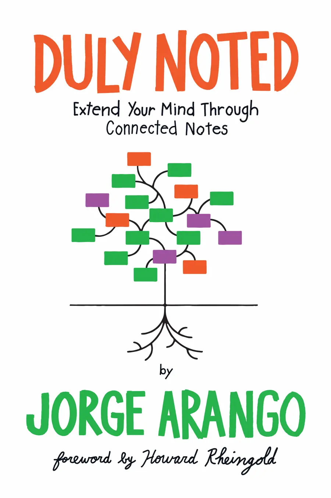

How I Write My Books
Visual Structures that Help You Think
Abstract
How do you turn messy ideas into a coherent book? In this session, Jorge shows how simple visual structures—maps, axes, and elemental distinctions—can externalize thinking and reveal relationships. Using the real framework he used to write Duly Noted, he’ll show how information architecture helps shape scope, sequence arguments, and keep readers oriented.
- See the visual framework behind Duly Noted and why it works.
- Learn simple structures (grids, facets, concept maps) to clarify ideas quickly.
- Take away a lightweight workflow to move from notes to outline to manuscript.